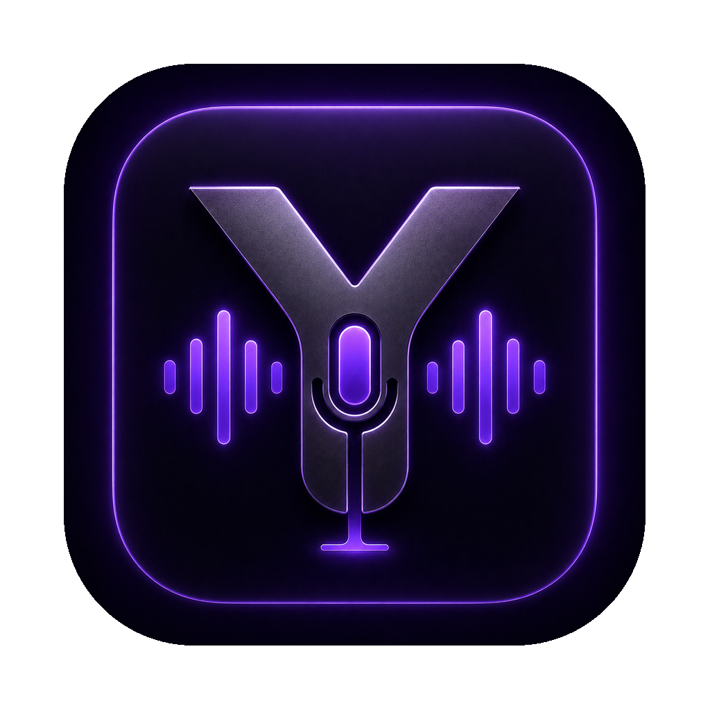

Hold a key, talk, and what you said lands at the cursor — in any app. Free, open-source, and offline by default. A no-subscription alternative to Wispr Flow.
Unzip and open — no terminal needed. (macOS: first run, right-click → Open.)
Transcription runs locally with Whisper — no account, no cloud, no telemetry. Your audio only leaves the machine if you choose a cloud engine.
MIT-licensed and unlimited. No weekly word limit, nothing to upsell.
macOS, Windows and Linux from one config. Menu-bar app on Mac, system tray on Windows/Linux.
Picks up the names and jargon you repeat, and lets you set per-app profiles for vocab and cleanup.
Offline faster-whisper by default; point it at Groq/OpenAI or your own Whisper server when you want speed.
Independently built and self-funded. If a paid tier ever lands, installs from before the cutoff stay free.
| Wispr Flow | yap | |
|---|---|---|
| Price | $12–15/mo (free: 2k words/wk) | Free, unlimited |
| Offline | Cloud only | Local Whisper by default |
| Sends audio to a server | Always | Only if you opt into cloud |
| Open source | No | Yes (MIT) |
| Platforms | Mac/Win/iOS/Android | Mac/Win/Linux |
Download a build above, or with Python 3.9–3.13:
pipx install "yap-dictation[full] @ git+https://github.com/AkuchiS/yap"
Then hold Right Option (Right Ctrl elsewhere), speak, release — your words land at the cursor.